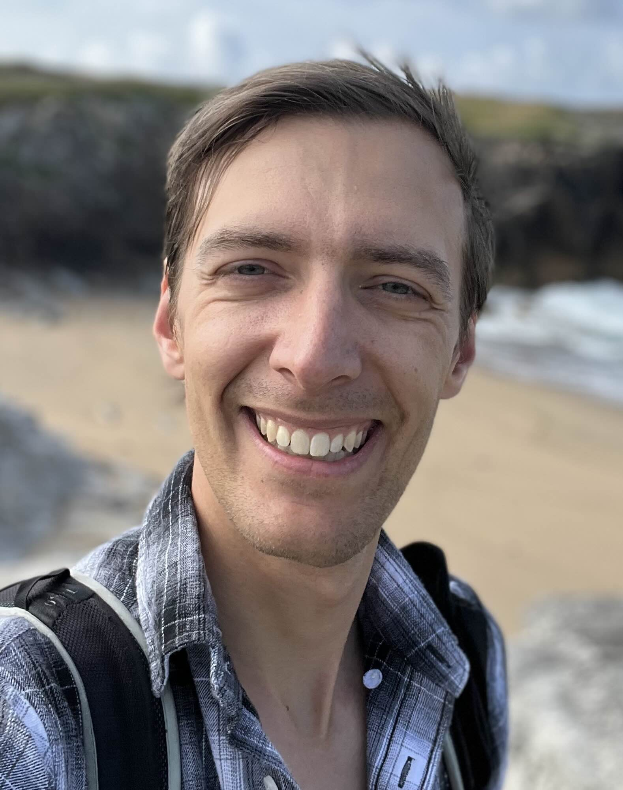

 |
Dr. Daniel Korchinskioffice: BSP 528 (Cubotron UNIL)Rte de la Sorge, Lausanne, Switzerland |
Research
I am a statistical physicist tackling questions in fundamental AI research. Currently, I am working with the group of Matthieu Wyart to develop a physics of deep learning.
My PhD and MSc had a unified theme of avalanches. Many complex systems self-organize into critical states, where dynamics are scale-free and correlated across the system. These "scale-free" fluctuations we recognize as avalanches or earthquakes have fractal dynamics (check out the Abelian Sandpile demo below!)
My random walk through the research landscape also includes excursions through biomedical imaging and quantum key distribution.
Misc
Abelian Sandpile VisualizationNewton Fractal Visualization
Double Pendulum Fractal Visualization